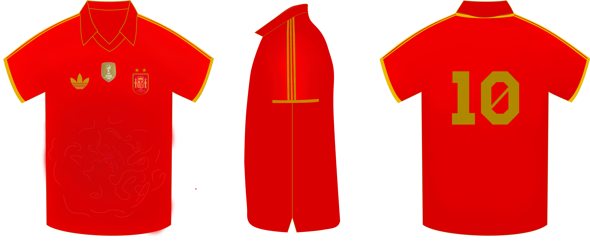
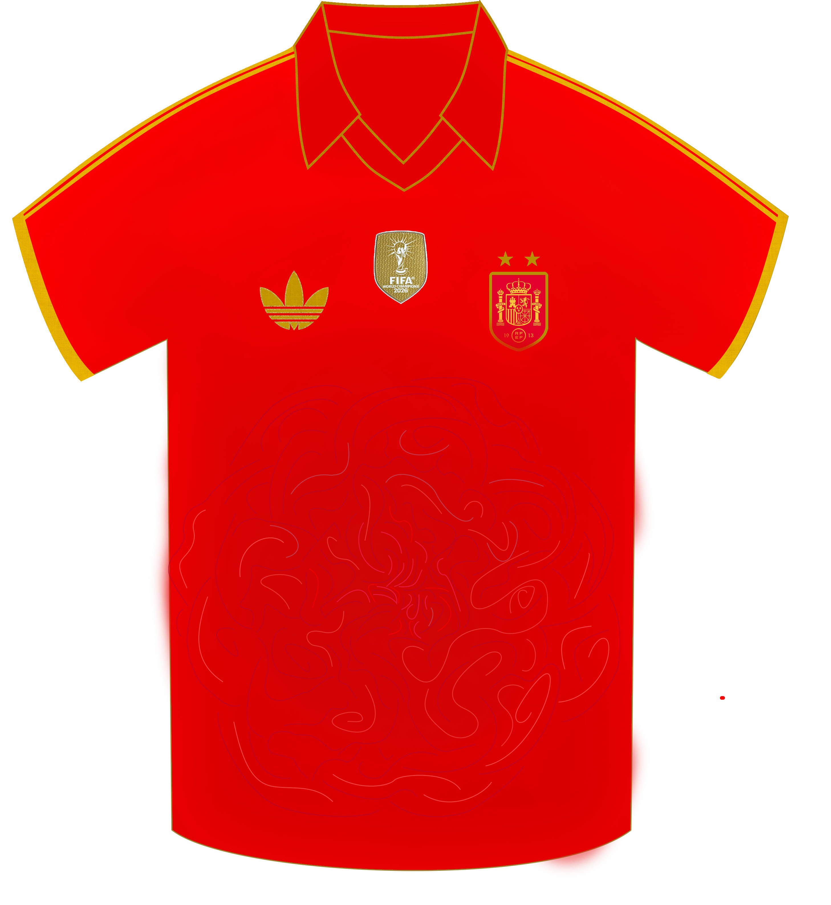
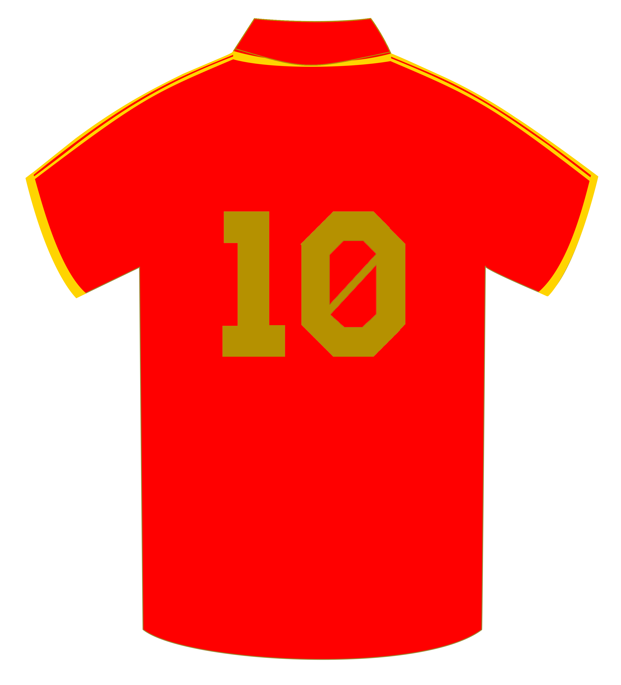
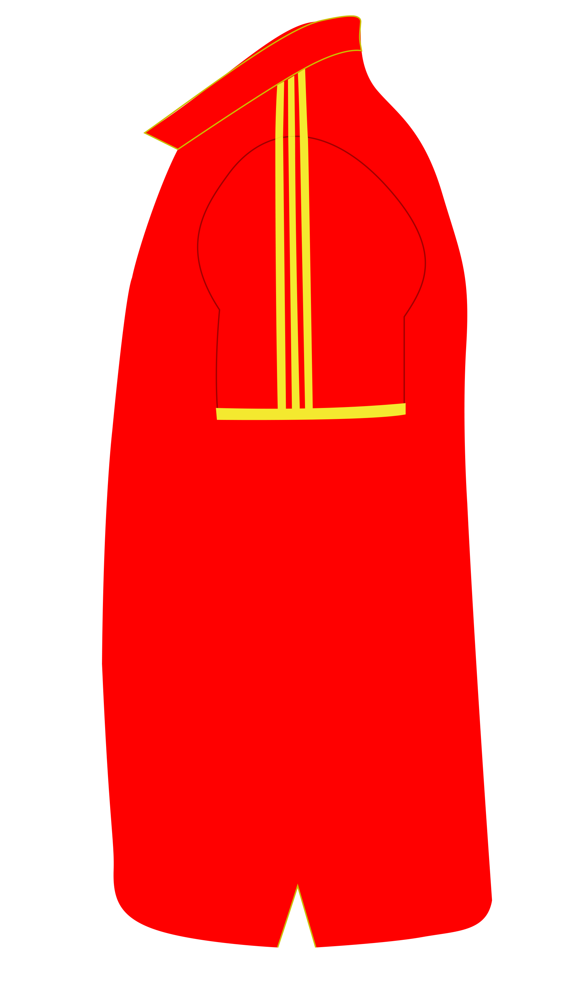

DISEÑO · CONCEPT ART
Camiseta de España — Mundial 2030
Concepto de diseño para una propuesta de camiseta de la selección Española para el Mundial de 2030. Inspirada en la camiseta del mundial de España 1982, la edición de la camiseta combina elementos característicos de camisetas antiguas y la utilidad de materiales actuales. Así, el leve diseño de la flor nacional de España, el clavel, flor utilizada en todas las comunidades y en sus elementos culturales, representa una flor que une un país.


